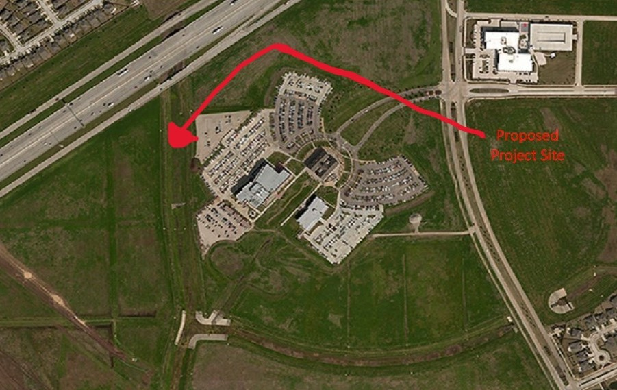

Introduction
Flavor-Om's establishment at the University of Houston - Sugar Land campus represents a pivotal moment in the development of the area upcoming in Summer 2024. As one of the few dining options available on this small campus, Flavor-Om fills a crucial niche, providing students, faculty, and visitors with a vibrant culinary experience without having to venture far from their academic pursuits. Its presence not only enhances the campus's appeal but also serves as a hub for community engagement, where individuals can gather, socialize, and savor delicious meals amidst the bustling academic atmosphere.
About Us

Discover Flavor-Om, where culinary innovation meets campus community at the University of Houston - Sugar Land. Our mission is to redefine the dining experience for students, faculty, and visitors alike, all within the vibrant setting of this esteemed campus.
Nestled within the heart of the Sugar Land campus, Flavor-Om is more than just a dining destination; it's a culinary sanctuary where students pursuing majors in Computer Information Systems (CIS), Digital Media (DIGM), and Nursing can refuel and recharge. Our menu reflects the diverse tastes and dietary needs of our campus community.
As a cornerstone of campus life, Flavor-Om serves as a gathering place for students to connect, collaborate, and cultivate friendships. Whether it's a quick bite between classes or a leisurely meal with friends, our welcoming atmosphere and delicious offerings provide the perfect backdrop for meaningful interactions.
Beyond our commitment to culinary excellence, Flavor-Om is dedicated to supporting the broader community. Through partnerships with local organizations, volunteer initiatives, and sustainable practices, we strive to make a positive impact both on campus and beyond.
Join us at Flavor-Om! Where every meal is an opportunity to savor the flavors of innovation, community, and the unique spirit of the Sugar Land campus!